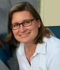

Scientific data repositories are increasingly publishing their content as linked open data to foster data sharing and interoperability. In this talk, I will describe a complementary vision for linked open knowledge and the pressing need for it in science domains. This vision is motivated by our own work, where we publish the provenance of scientific analyses as linked open data but want to publish more. While provenance captures the execution traces of analysis workflow, we also publish the general method that was used as a reusable workflow. Moreover, we describe the models and data transformations that are used in the method as well as the constraints that validate the analysis that was done. This requires the publication of scientific knowledge, which is linked and open on the Web, and complements the linked open data that we already have. I will also discuss a research agenda for linked open knowledge and its benefits to science domains.
Dr. Yolanda Gil is Director of Knowledge Technologies and Associate Division Director at the Information Sciences Institute of the University of Southern California, and Research Professor in the Computer Science Department. She received her M.S. and Ph. D. degrees in Computer Science from Carnegie Mellon University. Dr. Gil leads a group that conducts research on various aspects of Interactive Knowledge Capture. Her research interests include intelligent user interfaces, knowledge-rich problem solving, and the semantic web. An area of recent interest is collaborative large-scale data analysis through semantic workflows. She initiated and chaired the W3C Provenance Group that led to a community standard in this area. Dr. Gil has served in the Advisory Committee of the Computer Science and Engineering Directorate of the National Science Foundation. She is Chair of ACM SIGAI, the Association for Computing Machinery's Special Interest Group on Artificial Intelligence. She was elected Fellow of the American Association of Artificial Intelligence (AAAI) in 2012.